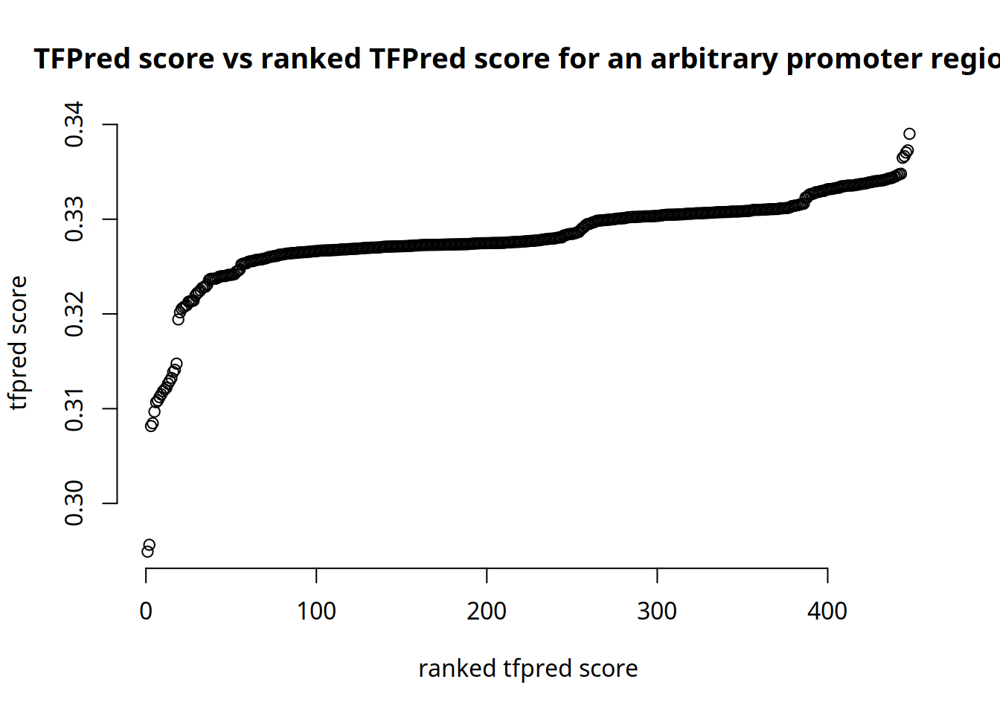
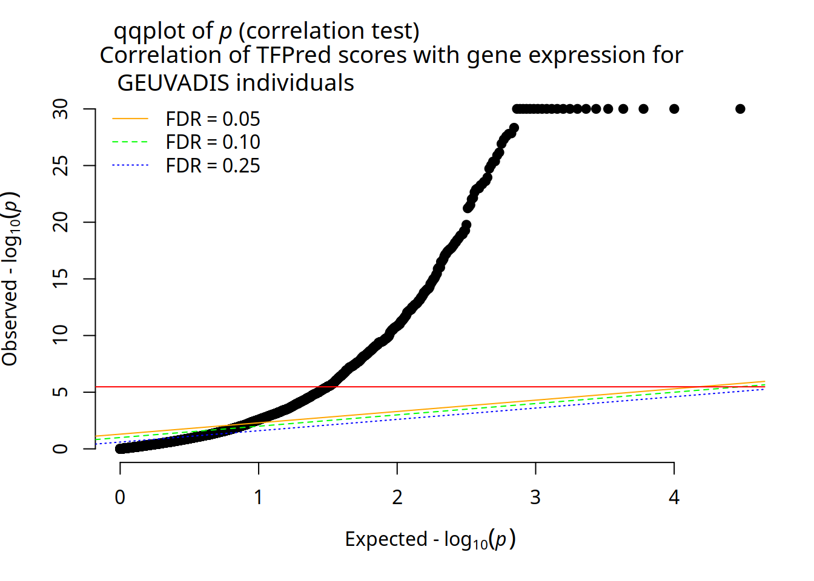
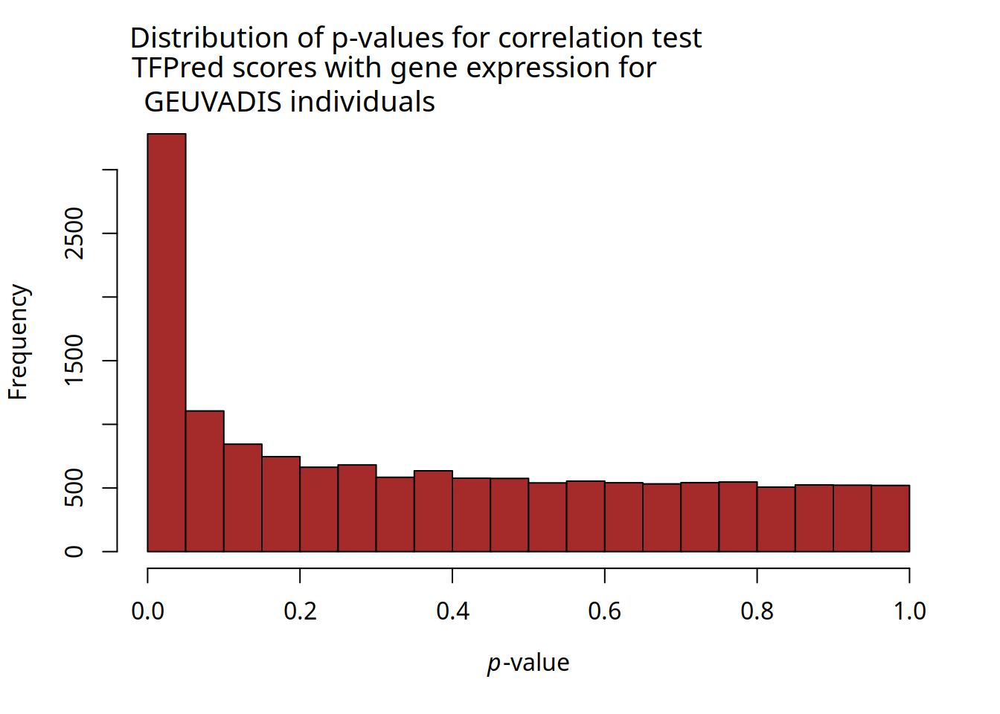
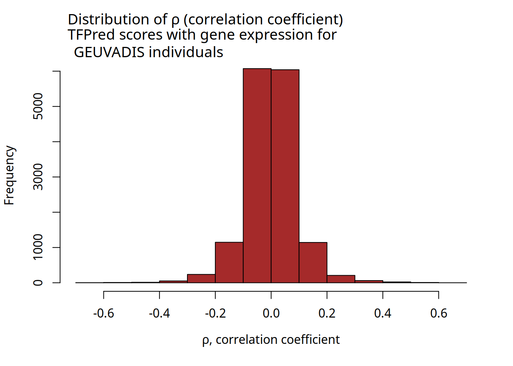
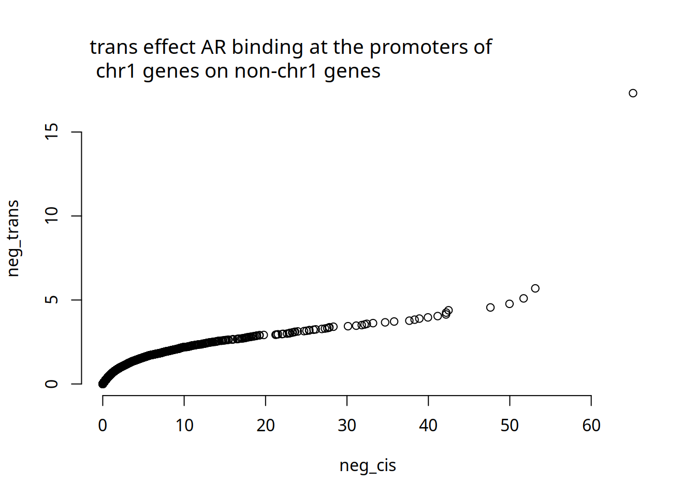
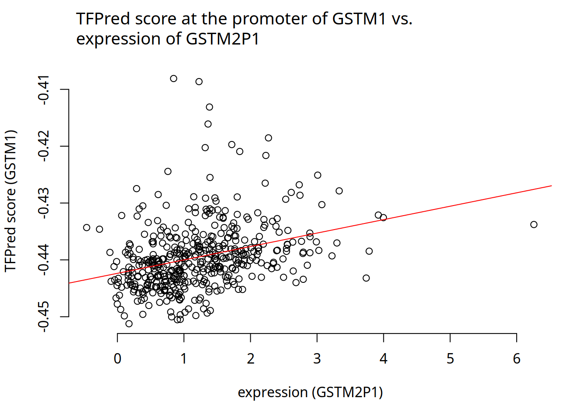
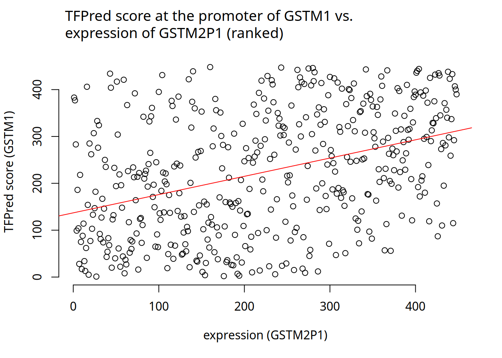
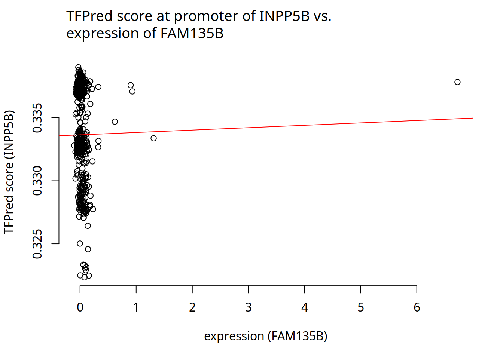
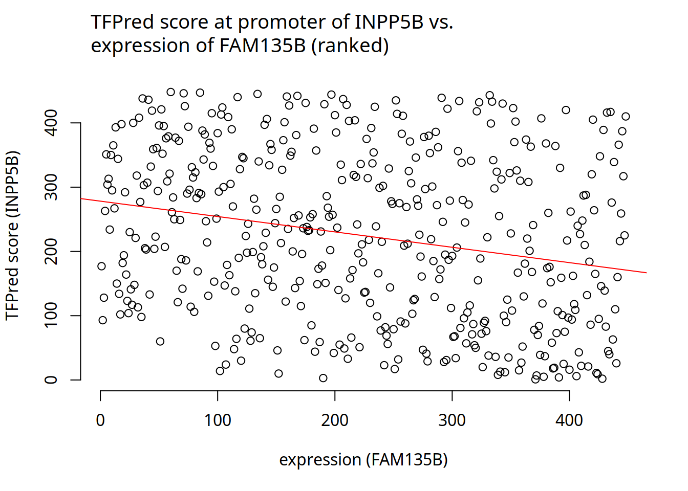

expr_dir <- '/lus/grand/projects/TFXcan/imlab/users/temi/projects/TFXcan/experiments'Association analysis of AR-prostate TFPred scores with GEUVADIS gene expression
if(!requireNamespace("BiocManager", quietly=TRUE)){install.packages("BiocManager")}
if(!require("annotatr")){BiocManager::install("annotatr")}Loading required package: annotatrif(!require("TxDb.Hsapiens.UCSC.hg38.knownGene")){BiocManager::install("TxDb.Hsapiens.UCSC.hg38.knownGene")}Loading required package: TxDb.Hsapiens.UCSC.hg38.knownGeneLoading required package: GenomicFeaturesLoading required package: BiocGenerics
Attaching package: 'BiocGenerics'The following objects are masked from 'package:stats':
IQR, mad, sd, var, xtabsThe following objects are masked from 'package:base':
anyDuplicated, aperm, append, as.data.frame, basename, cbind,
colnames, dirname, do.call, duplicated, eval, evalq, Filter, Find,
get, grep, grepl, intersect, is.unsorted, lapply, Map, mapply,
match, mget, order, paste, pmax, pmax.int, pmin, pmin.int,
Position, rank, rbind, Reduce, rownames, sapply, setdiff, sort,
table, tapply, union, unique, unsplit, which.max, which.minLoading required package: S4VectorsLoading required package: stats4
Attaching package: 'S4Vectors'The following objects are masked from 'package:base':
expand.grid, I, unnameLoading required package: IRangesLoading required package: GenomeInfoDbLoading required package: GenomicRangesLoading required package: AnnotationDbiLoading required package: BiobaseWelcome to Bioconductor
Vignettes contain introductory material; view with
'browseVignettes()'. To cite Bioconductor, see
'citation("Biobase")', and for packages 'citation("pkgname")'.# library(ensembldb)
# library(EnsDb.Hsapiens.v86)
if(!require("EnsDb.Hsapiens.v86")){BiocManager::install("EnsDb.Hsapiens.v86")}Loading required package: EnsDb.Hsapiens.v86Loading required package: ensembldbLoading required package: AnnotationFilter
Attaching package: 'ensembldb'The following object is masked from 'package:stats':
filterlibrary(glue)
Attaching package: 'glue'The following object is masked from 'package:GenomicRanges':
trimThe following object is masked from 'package:IRanges':
trimlibrary(GenomicRanges)
library(reticulate)
library(R.utils)Loading required package: R.ooLoading required package: R.methodsS3R.methodsS3 v1.8.2 (2022-06-13 22:00:14 UTC) successfully loaded. See ?R.methodsS3 for help.R.oo v1.25.0 (2022-06-12 02:20:02 UTC) successfully loaded. See ?R.oo for help.
Attaching package: 'R.oo'The following object is masked from 'package:R.methodsS3':
throwThe following object is masked from 'package:glue':
trimThe following object is masked from 'package:GenomicRanges':
trimThe following object is masked from 'package:IRanges':
trimThe following objects are masked from 'package:methods':
getClasses, getMethodsThe following objects are masked from 'package:base':
attach, detach, load, saveR.utils v2.12.2 (2022-11-11 22:00:03 UTC) successfully loaded. See ?R.utils for help.
Attaching package: 'R.utils'The following object is masked from 'package:utils':
timestampThe following objects are masked from 'package:base':
cat, commandArgs, getOption, isOpen, nullfile, parse, warningslibrary(data.table)
Attaching package: 'data.table'The following object is masked from 'package:GenomicRanges':
shiftThe following object is masked from 'package:IRanges':
shiftThe following objects are masked from 'package:S4Vectors':
first, secondlibrary(tidyverse)── Attaching core tidyverse packages ──────────────────────── tidyverse 2.0.0 ──
✔ dplyr 1.1.2 ✔ readr 2.1.4
✔ forcats 1.0.0 ✔ stringr 1.5.0
✔ ggplot2 3.4.2 ✔ tibble 3.2.1
✔ lubridate 1.9.2 ✔ tidyr 1.3.0
✔ purrr 1.0.1 ── Conflicts ────────────────────────────────────────── tidyverse_conflicts() ──
✖ lubridate::%within%() masks IRanges::%within%()
✖ dplyr::between() masks data.table::between()
✖ dplyr::collapse() masks IRanges::collapse()
✖ dplyr::combine() masks Biobase::combine(), BiocGenerics::combine()
✖ dplyr::desc() masks IRanges::desc()
✖ tidyr::expand() masks S4Vectors::expand()
✖ tidyr::extract() masks R.utils::extract()
✖ dplyr::filter() masks ensembldb::filter(), stats::filter()
✖ dplyr::first() masks data.table::first(), S4Vectors::first()
✖ lubridate::hour() masks data.table::hour()
✖ lubridate::isoweek() masks data.table::isoweek()
✖ dplyr::lag() masks stats::lag()
✖ dplyr::last() masks data.table::last()
✖ lubridate::mday() masks data.table::mday()
✖ lubridate::minute() masks data.table::minute()
✖ lubridate::month() masks data.table::month()
✖ ggplot2::Position() masks BiocGenerics::Position(), base::Position()
✖ lubridate::quarter() masks data.table::quarter()
✖ purrr::reduce() masks GenomicRanges::reduce(), IRanges::reduce()
✖ dplyr::rename() masks S4Vectors::rename()
✖ lubridate::second() masks data.table::second(), S4Vectors::second()
✖ lubridate::second<-() masks S4Vectors::second<-()
✖ dplyr::select() masks ensembldb::select(), AnnotationDbi::select()
✖ dplyr::slice() masks IRanges::slice()
✖ purrr::transpose() masks data.table::transpose()
✖ lubridate::wday() masks data.table::wday()
✖ lubridate::week() masks data.table::week()
✖ lubridate::yday() masks data.table::yday()
✖ lubridate::year() masks data.table::year()
ℹ Use the conflicted package (<http://conflicted.r-lib.org/>) to force all conflicts to become errorslibrary(annotatr)
library(AnnotationHub)Loading required package: BiocFileCache
Loading required package: dbplyr
Attaching package: 'dbplyr'
The following objects are masked from 'package:dplyr':
ident, sql
Attaching package: 'AnnotationHub'
The following object is masked from 'package:Biobase':
cachelibrary(biomaRt)valid_chr <- c(1:22, 'X', 'Y')
valid_chr [1] "1" "2" "3" "4" "5" "6" "7" "8" "9" "10" "11" "12" "13" "14" "15"
[16] "16" "17" "18" "19" "20" "21" "22" "X" "Y" After predictions
#setwd('/grand/TFXcan/imlab/users/temi/projects/TFXcan/scripts/')
project_dir <- '/lus/grand/projects/TFXcan/imlab/users/temi/projects/TFXcan'
source(glue('{project_dir}/TFPred_pipeline/pipelines/utilities.R'))
experiment_dir <- '/lus/grand/projects/TFXcan/imlab/users/temi/projects/TFXcan/experiments/association'So there are about 4 different rds files ==> I will process one for now, but join with the others later and modify this script
# predictions
# tfpred_predictions <- readRDS(glue('{experiment_dir}/output/aggByMean_AR_Prostate_geuvadis.linear.01.rds'))
tfpred_matrix <- purrr::map(c('01', '02', '03', '04'), function(ii){
tfpred_predictions <- readRDS(glue('{experiment_dir}/output/aggByMean_AR_Prostate_geuvadis.linear.{ii}.rds'))
out <- lapply(tfpred_predictions, function(each_ind){
a <- data.table::setDT(each_ind$aggByMean)
a
})
tfpred_matrix <- out %>% purrr::reduce(dplyr::inner_join, by='regions')
colnames(tfpred_matrix) <- c('regions', names(tfpred_predictions))
return(tfpred_matrix)
}) %>% purrr::reduce(dplyr::inner_join, by=c('regions')) %>% tibble::column_to_rownames('regions')
dim(tfpred_matrix) ; tfpred_matrix[1:5, 1:5][1] 15024 448 HG00262 HG00246 HG00187 HG00151 NA12872
chr6_107459565_107460564 0.3306418 0.33286358 0.32760535 0.32684507 0.33357008
chr6_3230807_3231806 0.2122660 0.21198024 0.21221499 0.21438659 0.21107506
chr6_44386706_44387705 0.0210355 0.02070309 0.01877992 0.01806819 0.01854296
chr6_36195744_36196743 0.2970409 0.29687855 0.29652629 0.29620033 0.29660880
chr6_138160939_138161938 0.1628000 0.17032602 0.16213668 0.16485335 0.16580068For completeness, go through all the loci in the predictions and select the intersections
# ty <- function(a, b){
# intersect(a[['aggByMean']][, 'regions'], b[['aggByMean']][, 'regions'])
# # sum(length(a[['aggByMean']][, 'regions']), length(b[['aggByMean']][, 'regions']))
# }
common_regions <- rownames(tfpred_matrix)
common_regions[1:10] ; length(common_regions) [1] "chr6_107459565_107460564" "chr6_3230807_3231806"
[3] "chr6_44386706_44387705" "chr6_36195744_36196743"
[5] "chr6_138160939_138161938" "chr6_106628578_106629577"
[7] "chr6_111258327_111259326" "chr6_36972025_36973024"
[9] "chr6_73521576_73522575" "chr3_123066025_123067024"[1] 15024Need to associate the loci back to the promoters and back to the genes
promoter_mtdt <- data.table::fread(glue('{experiment_dir}/metadata/geuvadis_expression_promoters.txt'))
dim(promoter_mtdt); promoter_mtdt[1:5, 1:10][1] 15577 475 ensembl_id seqnames start end width strand id
1: ENSG00000000003 chrX 100636807 100637806 1000 - promoter:248599
2: ENSG00000000419 chr20 50958551 50959550 1000 - promoter:233020
3: ENSG00000000457 chr1 169893897 169894896 1000 - promoter:19656
4: ENSG00000000460 chr1 169661007 169662006 1000 + promoter:8564
5: ENSG00000000938 chr1 27635186 27636185 1000 - promoter:13472
tx_id symbol TargetID
1: ENST00000373020.9 TSPAN6 ENSG00000000003.9
2: ENST00000466152.5 DPM1 ENSG00000000419.7
3: ENST00000367771.11 SCYL3 ENSG00000000457.8
4: ENST00000498289.5 C1orf112 ENSG00000000460.11
5: ENST00000374005.8 FGR ENSG00000000938.7Filter for the predicted loci
subset_promoter_mtdt <- promoter_mtdt %>% tidyr::unite(loci, seqnames:end, sep='_') %>% dplyr::filter(loci %in% common_regions)
subset_promoter_mtdt[1:5, 1:10] ; dim(subset_promoter_mtdt) ensembl_id loci width strand id
1 ENSG00000000419 chr20_50958551_50959550 1000 - promoter:233020
2 ENSG00000000457 chr1_169893897_169894896 1000 - promoter:19656
3 ENSG00000000460 chr1_169661007_169662006 1000 + promoter:8564
4 ENSG00000000938 chr1_27635186_27636185 1000 - promoter:13472
5 ENSG00000001036 chr6_143511721_143512720 1000 - promoter:90087
tx_id symbol TargetID Gene_Symbol Chr
1 ENST00000466152.5 DPM1 ENSG00000000419.7 ENSG00000000419.7 20
2 ENST00000367771.11 SCYL3 ENSG00000000457.8 ENSG00000000457.8 1
3 ENST00000498289.5 C1orf112 ENSG00000000460.11 ENSG00000000460.11 1
4 ENST00000374005.8 FGR ENSG00000000938.7 ENSG00000000938.7 1
5 ENST00000002165.11 FUCA2 ENSG00000001036.8 ENSG00000001036.8 6[1] 15033 473There are some duplicated entries : because some promoter region may be associated with more than one gene For now, I will remove these but just doing distinct
subset_promoter_mtdt %>% dplyr::group_by(loci) %>% dplyr::filter(n() > 1) # A tibble: 18 × 473
# Groups: loci [9]
ensembl_id loci width strand id tx_id symbol TargetID Gene_Symbol Chr
<chr> <chr> <int> <chr> <chr> <chr> <chr> <chr> <chr> <chr>
1 ENSG0000005… chr1… 1000 + prom… ENST… ZC3H1… ENSG000… ENSG000000… 1
2 ENSG0000014… chr2… 1000 - prom… ENST… CALM2 ENSG000… ENSG000001… 2
3 ENSG0000015… chr5… 1000 + prom… ENST… PELO ENSG000… ENSG000001… 5
4 ENSG0000016… chr1… 1000 + prom… ENST… ZNF761 ENSG000… ENSG000001… 19
5 ENSG0000016… chr1… 1000 - prom… ENST… TPTE2… ENSG000… ENSG000001… 13
6 ENSG0000018… chr2… 1000 - prom… ENST… UBOX5 ENSG000… ENSG000001… 20
7 ENSG0000020… chr1… 1000 + prom… ENST… LINC0… ENSG000… ENSG000002… 12
8 ENSG0000021… chr1… 1000 - prom… ENST… ZNF62… ENSG000… ENSG000002… 19
9 ENSG0000021… chr5… 1000 + prom… ENST… ITGA1 ENSG000… ENSG000002… 5
10 ENSG0000021… chr2… 1000 - prom… ENST… FASTK… ENSG000… ENSG000002… 20
11 ENSG0000023… chr1… 1000 + prom… ENST… RBM14 ENSG000… ENSG000002… 11
12 ENSG0000023… chr2… 1000 - prom… ENST… STPG4 ENSG000… ENSG000002… 2
13 ENSG0000023… chr1… 1000 - prom… ENST… SUGT1… ENSG000… ENSG000002… 13
14 ENSG0000024… chr1… 1000 + prom… ENST… TPM3P9 ENSG000… ENSG000002… 19
15 ENSG0000024… chr1… 1000 + prom… ENST… RBM14… ENSG000… ENSG000002… 11
16 ENSG0000025… chr1… 1000 + prom… ENST… CLLU1 ENSG000… ENSG000002… 12
17 ENSG0000025… chr1… 1000 + prom… ENST… ZBED6 ENSG000… ENSG000002… 1
18 ENSG0000025… chr1… 1000 - prom… ENST… ZNF625 ENSG000… ENSG000002… 19
# ℹ 463 more variables: Coord <int>, HG00096 <dbl>, HG00097 <dbl>,
# HG00099 <dbl>, HG00100 <dbl>, HG00101 <dbl>, HG00102 <dbl>, HG00103 <dbl>,
# HG00104 <dbl>, HG00105 <dbl>, HG00106 <dbl>, HG00108 <dbl>, HG00109 <dbl>,
# HG00110 <dbl>, HG00111 <dbl>, HG00112 <dbl>, HG00114 <dbl>, HG00115 <dbl>,
# HG00116 <dbl>, HG00117 <dbl>, HG00118 <dbl>, HG00119 <dbl>, HG00120 <dbl>,
# HG00121 <dbl>, HG00122 <dbl>, HG00123 <dbl>, HG00124 <dbl>, HG00125 <dbl>,
# HG00126 <dbl>, HG00127 <dbl>, HG00128 <dbl>, HG00129 <dbl>, …Select the individuals
geuvadis_individuals <- colnames(tfpred_matrix)
length(geuvadis_individuals)[1] 448gene_expr <- subset_promoter_mtdt %>% dplyr::select(all_of(c('ensembl_id', 'symbol', 'loci', geuvadis_individuals))) %>% dplyr::distinct(loci, .keep_all=TRUE) %>% dplyr::arrange(match(loci, common_regions))
dim(gene_expr)[1] 15024 451# merge each loci
mt <- gene_expr %>% dplyr::select(all_of(c('loci', 'symbol')))
tfpred_matrix <- tfpred_matrix %>% tibble::rownames_to_column('loci') %>% inner_join(mt, by=c('loci' = 'loci')) %>% dplyr::relocate(symbol)tfpred_matrix[1:5, 1:5] ; dim(tfpred_matrix) symbol loci HG00262 HG00246 HG00187
1 PDSS2 chr6_107459565_107460564 0.3306418 0.33286358 0.32760535
2 PSMG4 chr6_3230807_3231806 0.2122660 0.21198024 0.21221499
3 CDC5L chr6_44386706_44387705 0.0210355 0.02070309 0.01877992
4 BRPF3 chr6_36195744_36196743 0.2970409 0.29687855 0.29652629
5 ARFGEF3 chr6_138160939_138161938 0.1628000 0.17032602 0.16213668[1] 15024 450Correlation test
mat_tfpred <- tfpred_matrix %>% dplyr::select(all_of(c('symbol', geuvadis_individuals))) %>% tibble::column_to_rownames('symbol')
mat_expr <- gene_expr %>% dplyr::select(all_of(c('symbol', geuvadis_individuals))) %>% tibble::column_to_rownames('symbol')# match and order the rownames and colnames
mat_expr <- mat_expr[order(match(rownames(mat_expr), rownames(mat_tfpred))), ]
mat_expr <- mat_expr[, order(match(colnames(mat_expr), colnames(mat_tfpred)))]
identical(rownames(mat_expr), rownames(mat_tfpred))[1] TRUEidentical(colnames(mat_expr), colnames(mat_tfpred))[1] TRUEmat_expr[1:5, 1:5] ; mat_tfpred[1:5, 1:5] HG00262 HG00246 HG00187 HG00151 NA12872
PDSS2 5.3915374 6.43179821 5.05124412 5.77283326 6.66565395
PSMG4 9.5442514 8.46678114 9.22689323 5.93059666 8.76995406
CDC5L 7.9962083 7.36412146 7.51830398 7.64343824 8.82999947
BRPF3 2.2469991 1.59482969 3.60196774 3.01528350 3.26838748
ARFGEF3 0.0209032 0.03468664 0.03468043 0.02786052 0.01132483 HG00262 HG00246 HG00187 HG00151 NA12872
PDSS2 0.3306418 0.33286358 0.32760535 0.32684507 0.33357008
PSMG4 0.2122660 0.21198024 0.21221499 0.21438659 0.21107506
CDC5L 0.0210355 0.02070309 0.01877992 0.01806819 0.01854296
BRPF3 0.2970409 0.29687855 0.29652629 0.29620033 0.29660880
ARFGEF3 0.1628000 0.17032602 0.16213668 0.16485335 0.16580068pvec = rep(NA,nrow(mat_expr))
cvec = rep(NA,nrow(mat_expr))
for(cc in 1:nrow(mat_expr)) {
y <- mat_tfpred[cc, ] |> unlist() |> unname()
x <- mat_expr[cc, ] |> unlist() |> unname()
tryCatch({
res <- cor.test(y, x, method='spearman')
pvec[cc] = res$p.value
cvec[cc] = res$estimate
}, error=function(a){
pvec[cc] = NA
cvec[cc] = NA
})
#res = #t.test(pred[cc, obs[cc,]==1], pred[cc,obs[cc, ]==0])
}
names(pvec) <- rownames(mat_expr)
names(cvec) <- rownames(mat_expr)
# there may be some NAs ==> what are the indices
na_ids <- which(is.na(cvec))
na_idswhich(abs(cvec) > 0.5)qq_generic(pvec, distribution='uniform', neg_log10_values=T, BH=T, params_to_legend=list(x='topleft', bty = "n"), params_to_plot=list(frame.plot=F, pch=19))
mtext(expression("qqplot of" ~ italic(p) ~ "(correlation test)"), side=3, line=2, adj=0.05, cex=1.2)
mtext(glue("Correlation of TFPred scores with gene expression for GEUVADIS individuals"), side=3, line=0, cex=1.2, adj=0.05)hist(cvec, main='', xlab=expression(italic(rho)*', correlation coefficient'), cex.lab=1, col='brown')
mtext(expression("Distribution of" ~ rho ~ "(correlation coefficient)"), side=3, line=2, adj=0.05, cex=1.2)
mtext(glue("TFPred scores with gene expression for GEUVADIS individuals"), side=3, line=0, cex=1.2, adj=0.05)hist(pvec, main='', xlab=expression(italic(p)*"-value"), cex.lab=1, col='brown')
mtext(expression("Distribution of" ~ p*"-values for correlation test"), side=3, line=2, adj=0.05, cex=1.2)
mtext(glue("TFPred scores with gene expression for GEUVADIS individuals"), side=3, line=0, cex=1.2, adj=0.05)Some plots
tt <- which(abs(cvec) > 0.5)
aa <- mat_expr[tt, ] %>% as.data.frame() %>% tibble::rownames_to_column('locus')
bb <- mat_tfpred[tt, ] %>% as.data.frame() %>% tibble::rownames_to_column('locus')
merge_list <- list(aa, bb)
top_cor <- merge_list %>% purrr::map(., function(each_b){
each_b %>% tidyr::pivot_longer(!locus)
}) %>% purrr::reduce(dplyr::inner_join, by=c('locus', 'name'))
colnames(top_cor) <- c('locus', 'name', 'expr', 'tfpred_score')
top_cor[1:5, ]top_cor %>%
dplyr::mutate(locus = as.factor(locus)) %>%
ggplot(.) + aes(x=tfpred_score, y=expr, group=locus) +
geom_point(col='red') +
facet_wrap(~locus, scales='free') + theme_bw() +
labs(title=glue('scatterplot of top {length(unique(top_cor$locus))} loci (ranked by p-values and highest absolute correlations)'), x='TFPred scores', x = 'gene expression (RPKM)') +
theme(plot.title=element_text(size=16), axis.title=element_text(size=18))best_cwas <- cwas_scores_mat[top12$loci, ] %>% as.data.frame() %>% tibble::rownames_to_column('loci')
best_tfpred <- tfpred_mat[top12$loci, ] %>% as.data.frame() %>% tibble::rownames_to_column('loci')
best_gt <- gt_matrix[top12$loci, ] %>% as.data.frame() %>% tibble::rownames_to_column('loci')
merge_list <- list(best_cwas, best_tfpred, best_gt)Cis and trans associations
Trans effects
# merge each loci
mt <- gene_expr %>% dplyr::select(all_of(c('loci', 'symbol')))
tfpred_matrix_2 <- mat_tfpred %>% tibble::rownames_to_column('symbol') %>% inner_join(mt, by=c('symbol' = 'symbol')) %>% tidyr::separate_wider_delim(loci, delim='_', names=c('chr', 'start', 'end')) %>% dplyr::select(-c(start, end)) %>% dplyr::relocate(chr)
tfpred_matrix_2[1:5, 1:5]# A tibble: 5 × 5
chr symbol HG00262 HG00246 HG00187
<chr> <chr> <dbl> <dbl> <dbl>
1 chr6 PDSS2 0.331 0.333 0.328
2 chr6 PSMG4 0.212 0.212 0.212
3 chr6 CDC5L 0.0210 0.0207 0.0188
4 chr6 BRPF3 0.297 0.297 0.297
5 chr6 ARFGEF3 0.163 0.170 0.162 chr_order <- tfpred_matrix_2$chr
mat_tfpred_2 <- tfpred_matrix_2 %>% dplyr::select(-c(chr)) %>% tibble::column_to_rownames('symbol') %>% t()
mat_tfpred_2[1:5, 1:5] PDSS2 PSMG4 CDC5L BRPF3 ARFGEF3
HG00262 0.3306418 0.2122660 0.02103550 0.2970409 0.1628000
HG00246 0.3328636 0.2119802 0.02070309 0.2968786 0.1703260
HG00187 0.3276054 0.2122150 0.01877992 0.2965263 0.1621367
HG00151 0.3268451 0.2143866 0.01806819 0.2962003 0.1648534
NA12872 0.3335701 0.2110751 0.01854296 0.2966088 0.1658007mat_expr_2 <- mat_expr %>% t()
mat_expr_2[1:5, 1:5] PDSS2 PSMG4 CDC5L BRPF3 ARFGEF3
HG00262 5.391537 9.544251 7.996208 2.246999 0.02090320
HG00246 6.431798 8.466781 7.364121 1.594830 0.03468664
HG00187 5.051244 9.226893 7.518304 3.601968 0.03468043
HG00151 5.772833 5.930597 7.643438 3.015283 0.02786052
NA12872 6.665654 8.769954 8.829999 3.268387 0.01132483Remove NAs
expr_nas <- apply(mat_expr_2, 2, var) != 0
tfpred_nas <- apply(mat_tfpred_2, 2, var) != 0
both_true <- (expr_nas & tfpred_nas)
mat_expr_2 <- mat_expr_2[, both_true]
mat_tfpred_2 <- mat_tfpred_2[, both_true]
chr_order <- chr_order[both_true]
dim(mat_expr_2) ; dim(mat_tfpred_2) ; length(chr_order)[1] 448 15021[1] 448 15021[1] 15021For now, I am testing trans effects of promoters in chr1 against genes in other chromosomes
chr1 <- which(chr_order == 'chr1')
non_chr1 <- which(chr_order != 'chr1')
length(chr1) ; length(non_chr1)[1] 1659[1] 13362But I want to use the ranked values
mat_tfpred_ranked <- apply(mat_tfpred_2, 2, rank)
mat_expr_ranked <- apply(mat_expr_2, 2, rank)Checking
plot(mat_tfpred_ranked[, 1], mat_tfpred_2[, 1], xlab='ranked tfpred score', ylab='tfpred score', frame.plot=F, main='TFPred score vs ranked TFPred score for an arbitrary promoter region')
Some helper functions
# with help from Haky
cor2pval <- function(cc,nn) {
zz = atanh(cc) * sqrt(nn-3)
pnorm(-abs(zz))*2
}cis effect
nterms <- nrow(mat_tfpred_ranked)
nterms[1] 448cis_cor <- apply(scale(mat_tfpred_ranked) * scale(mat_expr_ranked), 2, sum)/nterms
cis_pvalues <- cor2pval(cis_cor, nterms)
cis_cor[1:5] ; cis_pvalues[1:5] PDSS2 PSMG4 CDC5L BRPF3 ARFGEF3
0.074960904 -0.043727327 -0.005552571 -0.062128657 -0.015756209 PDSS2 PSMG4 CDC5L BRPF3 ARFGEF3
0.1131314 0.3559980 0.9067548 0.1894204 0.7395834 range(cis_cor) ; range(cis_pvalues)[1] -0.6710080 0.6105636[1] 7.302809e-66 9.999372e-01which.max(cis_cor) ; which.min(cis_cor) ; which.min(cis_pvalues)SNHG5
1551 FLVCR1-DT
6356 FLVCR1-DT
6356 qq_generic(cis_pvalues, distribution='uniform', neg_log10_values=T, BH=T, params_to_legend=list(x='topleft', bty = "n"), params_to_plot=list(frame.plot=F, pch=19))Warning in qq_generic(cis_pvalues, distribution = "uniform", neg_log10_values =
T, : thresholding p to 1e-30mtext(expression("qqplot of" ~ italic(p) ~ "(correlation test)"), side=3, line=2, adj=0.05, cex=1.2)
mtext(glue("Correlation of TFPred scores with gene expression for \nGEUVADIS individuals"), side=3, line=0, cex=1.2, adj=0.05)
hist(cis_pvalues, main='', xlab=expression(italic(p)*"-value"), cex.lab=1, col='brown')
mtext(expression("Distribution of" ~ p*"-values for correlation test"), side=3, line=2, adj=0.05, cex=1.2)
mtext(glue("TFPred scores with gene expression for \nGEUVADIS individuals"), side=3, line=0, cex=1.2, adj=0.05)
hist(cis_cor, main='', xlab=expression(italic(rho)*', correlation coefficient'), cex.lab=1, col='brown')
mtext(expression("Distribution of" ~ rho ~ "(correlation coefficient)"), side=3, line=2, adj=0.05, cex=1.2)
mtext(glue("TFPred scores with gene expression for \nGEUVADIS individuals"), side=3, line=0, cex=1.2, adj=0.05)
Trans effects
aa <- scale(mat_tfpred_ranked[, chr1]) |> t()
bb <- scale(mat_expr_ranked[, non_chr1])
dim(aa) ; dim(bb)[1] 1659 448[1] 448 13362trans_cor <- (aa %*% bb)/ntermstrans_cor[1:5, 1:5] ; range(trans_cor[!is.na(trans_cor)]) ; dim(trans_cor) PDSS2 PSMG4 CDC5L BRPF3 ARFGEF3
FAM72D 0.094374943 0.021409033 0.01532639 0.026247472 -0.05689126
VCAM1 0.014656161 -0.001585022 -0.01539521 -0.023944979 -0.02432502
NBPF4 0.009593758 -0.054146287 -0.02230203 0.092930524 0.11620463
ADAM15 -0.064118490 -0.019774092 0.01633493 -0.003247944 0.06813438
SUMO1P3 0.042506102 -0.013443725 -0.02497125 0.023956564 -0.05660072[1] -0.3405610 0.3887832[1] 1659 13362trans_pvalues <- cor2pval(trans_cor, nterms)trans_pvalues[1:5, 1:5] ; range(trans_pvalues[!is.na(trans_pvalues)]) ; dim(trans_pvalues) PDSS2 PSMG4 CDC5L BRPF3 ARFGEF3
FAM72D 0.04584866 0.6514901 0.7464409 0.5797032 0.22958846
VCAM1 0.75717381 0.9733268 0.7453416 0.6134068 0.60778475
NBPF4 0.83961438 0.2528994 0.6379693 0.0492935 0.01379862
ADAM15 0.17559630 0.6765399 0.7303828 0.9453751 0.15000139
SUMO1P3 0.36960803 0.7767071 0.5982778 0.6132351 0.23198116[1] 4.857291e-18 1.000000e+00[1] 1659 13362plotting
neg_cis <- -log10(cis_pvalues)
neg_trans <- -log10(trans_pvalues)
qqplot(neg_cis, neg_trans, frame.plot=F)
#abline(lm(sort(neg_trans) ~ sort(neg_cis)), col = "red", lwd = 2, lty = 2)
mtext(glue("trans effect AR binding at the promoters of \nchr1 genes on non-chr1 genes"), side=3, line=0, cex=1.2, adj=0.05)
subsequent analysis
cis_pvalues[!is.na(cis_pvalues)][which.min(cis_pvalues[!is.na(cis_pvalues)])] FLVCR1-DT
7.302809e-66 trans_pvalues[, 'MAP3K2-DT'][!is.na(trans_pvalues[, 'MAP3K2-DT'])][which.min(trans_pvalues[, 'MAP3K2-DT'][!is.na(trans_pvalues[, 'MAP3K2-DT'])])] PABPC4-AS1
0.0004201727 trans_pvalues[which(trans_pvalues < 1e-50)]numeric(0)target_genes <- apply(trans_pvalues, 2, min) %>% sort() %>% head() # gene expression
trans_acting <- apply(trans_pvalues, 1, min) %>% sort() %>% head() # tfpred scores
target_genes ; trans_acting GSTM2P1 LINC02446 GAREM1 FRAS1 KCNJ2 FAM135B
4.857291e-18 7.265973e-14 1.650982e-13 3.299641e-12 5.037444e-12 7.441861e-12 GSTM1 ICMT AP4B1 MATN1-AS1 ZMYM1 INPP5B
4.857291e-18 7.265973e-14 1.650982e-13 1.796480e-13 6.441738e-13 1.115825e-12 which(trans_pvalues == min(trans_pvalues), arr.ind=T) row col
GSTM1 1339 2507target_genes ; trans_acting GSTM2P1 LINC02446 GAREM1 FRAS1 KCNJ2 FAM135B
4.857291e-18 7.265973e-14 1.650982e-13 3.299641e-12 5.037444e-12 7.441861e-12 GSTM1 ICMT AP4B1 MATN1-AS1 ZMYM1 INPP5B
4.857291e-18 7.265973e-14 1.650982e-13 1.796480e-13 6.441738e-13 1.115825e-12 x <- mat_expr['GSTM2P1', ] |> as.vector() |> unlist()
y <- mat_tfpred['GSTM1', ] |> as.vector() |> unlist()
plot(x, y, xlab='expression (GSTM2P1)', ylab='TFPred score (GSTM1)', frame.plot=F)
abline(lm(y ~ x), col='red')
mtext(expression("TFPred score at the promoter of GSTM1 vs. \nexpression of GSTM2P1"), side=3, line=1, adj=0.05, cex=1.2)
x <- mat_expr_ranked[, 'GSTM2P1'] |> as.vector() |> unlist()
y <- mat_tfpred_ranked[, 'GSTM1'] |> as.vector() |> unlist()
plot(x, y, xlab='expression (GSTM2P1)', ylab='TFPred score (GSTM1)', frame.plot=F)
abline(lm(y ~ x), col='red')
mtext(expression("TFPred score at the promoter of GSTM1 vs. \nexpression of GSTM2P1 (ranked)"), side=3, line=1, adj=0.05, cex=1.2)
x <- mat_expr['FAM135B', ] |> as.vector() |> unlist()
y <- mat_tfpred['INPP5B', ] |> as.vector() |> unlist()
plot(x, y, xlab='expression (FAM135B)', ylab='TFPred score (INPP5B)', frame.plot=F)
abline(lm(y ~ x), col='red')
mtext(expression("TFPred score at promoter of INPP5B vs. \nexpression of FAM135B"), side=3, line=1, adj=0.05, cex=1.2) 
x <- mat_expr_ranked[, 'FAM135B'] |> as.vector() |> unlist()
y <- mat_tfpred_ranked[, 'INPP5B'] |> as.vector() |> unlist()
plot(x, y, xlab='expression (FAM135B)', ylab='TFPred score (INPP5B)', frame.plot=F)
abline(lm(y ~ x), col='red')
mtext(expression("TFPred score at promoter of INPP5B vs. \nexpression of FAM135B (ranked)"), side=3, line=1, adj=0.05, cex=1.2) 